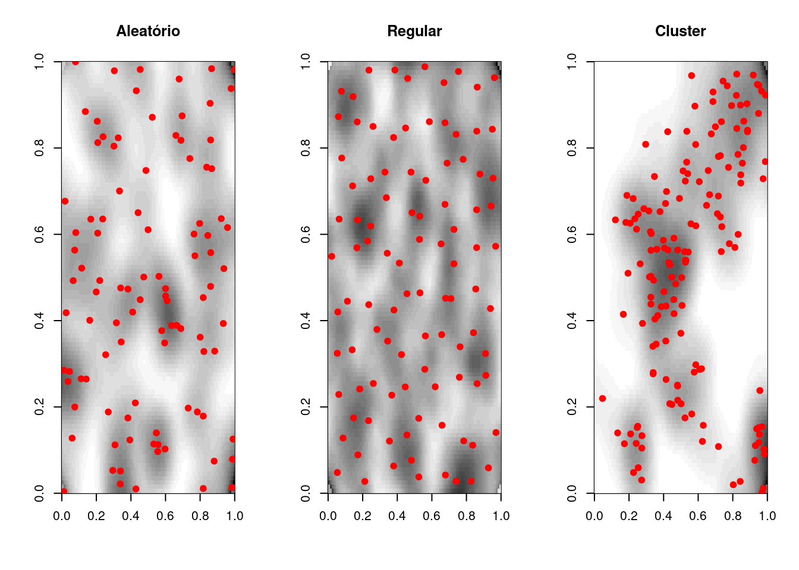
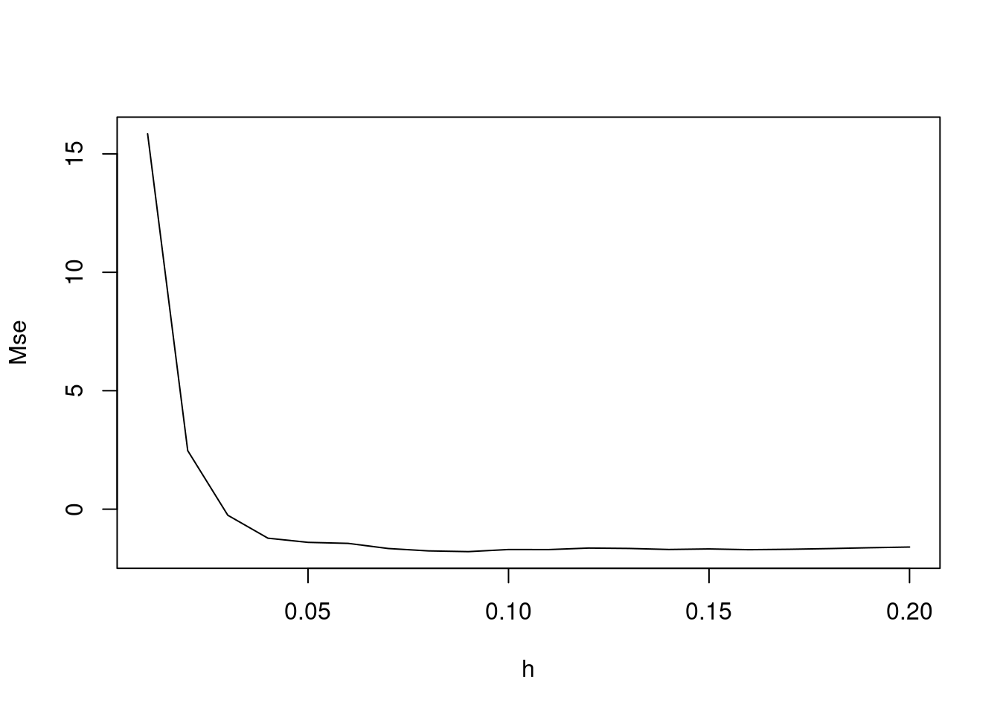
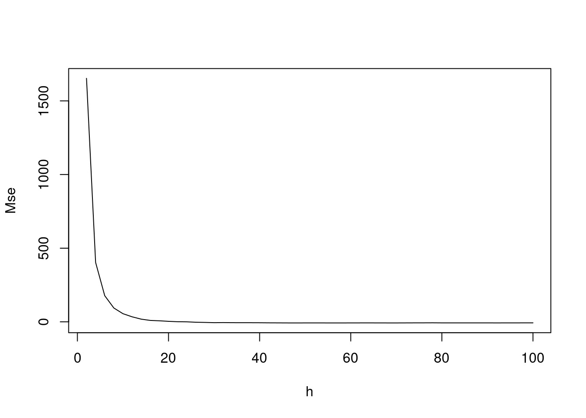
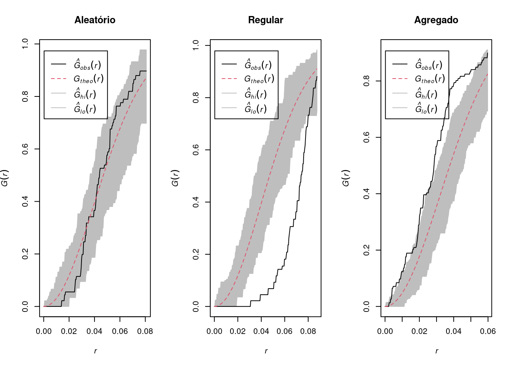
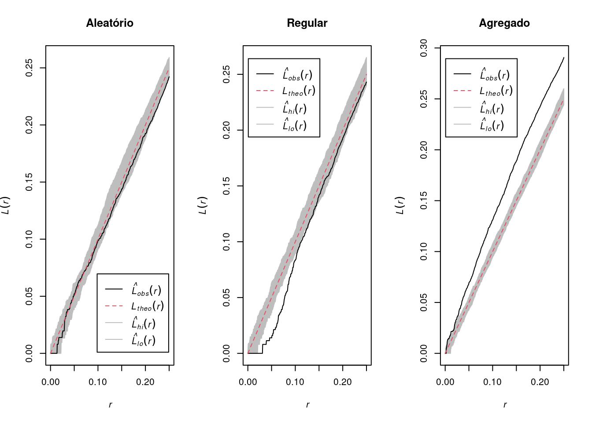

7 Padrões Pontuais I
7.1 O que são Padrões Pontuais?
A análise de padrão de pontos é o tipo mais simples de análise de dados espaciais. Baseia-se na localização dos eventos em um determinada área de estudo a partir das coordenadas. O objetivo é estudar a disposição espacial dos pontos a partir de suas coordenadas.
Os processos pontuais são definidos como um conjunto de pontos cuja localização está em \(R^2\), sendo esse processo gerado por um mecanismo estocástico.
Os pontos são os pares de coordenadas (x, y), que representam os eventos (observações, indivíduos, lugares ou qualquer outro objeto discreto definido no espaço).
| Evento | Coord X | Coord Y |
|---|---|---|
| 1 | 4,30 | 2,45 |
| 2 | 5,39 | 3,35 |
| 3 | 4,10 | 3,50 |
- Em geral o que se deseja é verificar a ocorrência de padrões espaciais nos pontos e se estão aglomerados espacialmente (clusters) ou se estão aleatoriamente distribuídos .
No exemplo abaixo temos os pontos dos casos suspeitos em uma investigação de surto de hepatite A no Rio de Janeiro no verão de 2017/2018. As estrelas amarelas mostram locais onde foi encontrado o vírus da hepatite A (HAV) em amostras de água.
7.2 Tipos de Distribuições
Aleatória: qualquer ponto tem a mesma probabilidade de ocorrer em qualquer local e a posição de qualquer ponto não é afetada pela posição de qualquer outro ponto;
Uniforme: cada ponto é tão longe de todos os seus vizinhos quanto possível;
Cluster: Muitos pontos estão concentrados juntos, e grandes áreas podem conter pouquíssimos pontos, se houver algum.

Fonte: Geospatial Training Workshop
Lendo os bancos com as localizações dos casos de homicídios, suicídios e acidentes de carro em Porto Alegre/RS.
As principais bibliotecas do R que estaremos usando nos exemplos abaixo são:
splancsspatstat
library(splancs)
library(spatstat)
library(gpclib)
# lendo os bancos
local <- "https://gitlab.procc.fiocruz.br/oswaldo/eco2019/raw/master/dados/"
homic <- read.table(paste0(local, "homic.dat"), col.names = c("x",
"y"))
suic <- read.table(paste0(local, "suic.dat"), col.names = c("x",
"y"))
acid <- read.table(paste0(local, "acid.dat"), col.names = c("x",
"y"))
# Plotando os casos de homicídios em um plano
# cartesiano
plot(homic$x, homic$y)
Porto Alegre é uma cidade disposta ao longo do eixo norte/sul. O grafico perdeu a estrutura espacial, ajustando para o tamanho e forma da janela. Por isso é necessario informar ao programa que este tipo de objeto tem uma escala que deve ser preservada, um objeto do tipo spatial point pattern.
homic.spp <- as.points(homic)
acid.spp <- as.points(acid)
suic.spp <- as.points(suic)
# Mapa
pointmap(homic.spp, pch = 19)
# Adicionando no mapa as outras causas externas
pointmap(suic.spp, add = T, pch = 19, col = 2)
pointmap(acid.spp, add = T, pch = 19, col = 3)
Importando o polígono do contorno de Porto Alegre:
# contorno de porto alegre
contorno.poa <- as.points(read.table(paste0(local,
"/contpoa.dat"), col.names = c("x", "y")))
polymap(contorno.poa)
pointmap(homic.spp, pch = 19, add = T, cex = 0.5)
pointmap(suic.spp, pch = 19, add = T, col = 2, cex = 0.5)
pointmap(acid.spp, pch = 19, add = T, col = 3, cex = 0.5)
Os pontos fora do contorno sao das ilhas, não devem ser incorporados a análise.
homic2.spp <- delpoints(homic.spp)
Este comando é igual ao identify, clique em cada ponto que deseja deletar. Para terminar, clique 2 vezes com o botão da direita.
polymap(contorno.poa)
pointmap(homic2.spp, pch = 19, add = T, cex = 0.5)
7.3 Processos pontuais
Os processos pontuais podem ser descritos como:
- Processo de primeira ordem, considerados globais ou de larga escala, que correspondem a variações no valor médio do processo no espaço.
- Tal processo pode ser representado por mensurações da intensidade baseado na densidade dos pontos (média dos eventos) na área de estudo (ex: Estimativa de Kernel).
- Processo de segunda ordem, denominados locais ou de pequena escala, é o processo representado pela interação entre dois pontos arbitrários.
- O objetivo desse processo é a mensuração da dependência espacial baseado na distância entre os pontos (ex: Vizinhos mais próximos, Função K).
7.4 Completa Aletoriedade Espacial (CSR - complete spatial randomness)
\(H_0\): Os pontos estão distribuidos aleatoriamente no espaço
\(H_1\): Os pontos podem formar clusters ou estão dispersos no espaço
CSR assume que os pontos seguem um processo homogêneo de Poisson na área de estudo.
Simulando alguns padrões dos dados de ponto, temos o seguinte:
- Simulando os processo espaciais:
set.seed(9999)
# Criando uma caixa envoltória
caixa <- rbind(c(0, 0), c(0, 1), c(1, 1), c(1, 0),
c(0, 0))
# Simulando um processo espacial aleatório csr
# significa 'complete spatial randomness'
alea.spp <- csr(caixa, 100)
# Processo de poisson clusterizado
clu.spp <- pcp.sim(rho = 20, m = 10, s2 = 0.005, region.poly = caixa)
# rho= intensidade do processo de poisson
# 'pai'(gerador) m=media s2=variancia
# Distribuição regular
uni.spp <- jitter(gridpts(caixa, 100), 2)
# o comando jitter cria uma flutuação aleatória
# sobre os valores o comando gridpts gera uma
# grade regular 2 é o fator de confusão
# adicionado ao grid regularpar(mfrow = c(1, 3))
plot(alea.spp, main = "Aleatório")
plot(uni.spp, main = "Regular")
plot(clu.spp, main = "Agregado")
Verificando a distribuição dos pontos por quadrantes:
# Convertendo para a class ppp
library(spatstat)
alea.ppp <- as.ppp(alea.spp, c(0, 1, 0, 1))
uni.ppp <- as.ppp(uni.spp, c(0, 1, 0, 1))
clu.ppp <- as.ppp(clu.spp, c(0, 1, 0, 1))
# Construindo os quadrantes com as respectivas
# contagens
aleatorioQ <- quadratcount(alea.ppp, nx = 4, ny = 4)
regularQ <- quadratcount(uni.ppp, nx = 4, ny = 4)
agregadoQ <- quadratcount(clu.ppp, nx = 4, ny = 4)
par(mfrow = c(1, 3))
plot(aleatorioQ, main = "Aleatório")
plot(alea.ppp, add = TRUE)
plot(regularQ, main = "Regular")
plot(uni.ppp, add = TRUE)
plot(agregadoQ, main = "Agregado")
plot(clu.ppp, add = TRUE)
Testando a Completa Aletoriedade Espacial (CSR - complete spatial randomness):
quadrat.test(aleatorioQ)
Chi-squared test of CSR using quadrat counts
data:
X2 = 12, df = 15, p-value = 0.6
alternative hypothesis: two.sided
Quadrats: 4 by 4 grid of tilesquadrat.test(agregadoQ)
Chi-squared test of CSR using quadrat counts
data:
X2 = 93, df = 15, p-value = 5e-13
alternative hypothesis: two.sided
Quadrats: 4 by 4 grid of tilesquadrat.test(regularQ)
Chi-squared test of CSR using quadrat counts
data:
X2 = 2.4, df = 15, p-value = 2e-04
alternative hypothesis: two.sided
Quadrats: 4 by 4 grid of tiles7.5 Estimativa de Kernel
Uma análise exploratória de um processo pontual geralmente é iniciada pela estimação da intensidade de ocorrências do processo em toda a região em estudo. Com isso, gera-se uma superfície cujo valor é proporcional à intensidade de eventos por unidade de área.
O estimador Kernel é um interpolador, que possibilita a estimação da intensidade do evento em toda a área, mesmo nas regiões onde o processo não tenha gerado nenhuma ocorrência real.
Essa técnica de alisamento, utiliza janela móvel que, para cada área, estima um peso variável conforme a distância.
O objetivo é de estimar a intensidade do processo pontual \(=\) número de eventos por unidade de área.

\[\hat{\lambda}(s) = \sum\limits_{i=1}^{n} \dfrac{1}{\tau^2} K \left( \frac{(s - s_i)}{\tau} \right) \nonumber\]
Sendo:
\(\hat{\lambda}(s)\) o valor estimado por área;
A função \(K(\bullet)\) uma FDP, escolhida de forma adequada para construir uma superfície contínua sobre os dados;
O parâmetro \(\tau\) denominado “largura de banda ou faixa” (bandwidth), controla a suavização da superfície gerada;
\(s\) o centro da área, representado por uma localização qualquer na área de estudo;
\(s_i\) as localizações dos eventos observados;
\(n\) o número de pontos (eventos).

7.5.1 Estimativa de Kernel com correção por bordas
Primeiramente calcula-se o volume sob o Kernel que está de fato dentro da região de estudo.
\[\delta_{\tau}(s) = \int_{R}\dfrac{1}{\tau^2}k \left( \dfrac{(s-u)}{\tau}\right) du\]
Aplicando a correção das bordas, obtém-se um estimador corrigido:
\[\hat{\lambda}(s) = \dfrac{1}{\delta_{\tau}(s)} \sum\limits_{i=1}^{n} \dfrac{1}{\tau^2} K \left( \frac{(s - s_i)}{\tau} \right) \nonumber\]
Exemplo:
# Analisando o efeito de primeira ordem: variação
# da intensidade kernel quartico
alea.ker <- kernel2d(alea.spp, caixa, h0 = 0.1, nx = 100,
ny = 100)
clu.ker <- kernel2d(clu.spp, caixa, h0 = 0.1, nx = 100,
ny = 100)
uni.ker <- kernel2d(uni.spp, caixa, h0 = 0.1, nx = 100,
ny = 100)
par(mfrow = c(1, 3))
image(alea.ker, col = gray(32:0/32), main = "Aleatório")
pointmap(alea.spp, add = T, pch = 19, col = "red")
image(uni.ker, col = gray(32:0/32), main = "Regular")
pointmap(uni.spp, add = T, pch = 19, col = "red")
image(clu.ker, col = gray(32:0/32), main = "Cluster")
pointmap(clu.spp, add = T, pch = 19, col = "red")
Alterando a largura de banda de forma exploratória para os dados clusterizados:
clu.ker <- kernel2d(clu.spp, caixa, h0 = 0.05, nx = 100,
ny = 100)
clu.ker1 <- kernel2d(clu.spp, caixa, h0 = 0.2, nx = 100,
ny = 100)
clu.ker2 <- kernel2d(clu.spp, caixa, h0 = 0.5, nx = 100,
ny = 100)
par(mfrow = c(1, 3))
image(clu.ker, col = gray(32:0/32), main = "Cluster - Tau = 0.05")
pointmap(clu.spp, add = T)
image(clu.ker1, col = gray(32:0/32), main = "Cluster - Tau = 0.2")
pointmap(clu.spp, add = T)
image(clu.ker2, col = gray(32:0/32), main = "Cluster - Tau = 0.5")
pointmap(clu.spp, add = T)
Passando as linhas de contorno nos exemplos com Tau=0.1:
par(mfrow = c(1, 3))
image(alea.ker, col = gray(32:0/32), main = "Aleatório")
contour(alea.ker, add = T)
image(uni.ker, col = gray(32:0/32), main = "Regular")
contour(uni.ker, add = T)
image(clu.ker, col = gray(32:0/32), main = "Cluster")
contour(clu.ker, add = T)Visualizando a superfície do Kernel em 3D:

Clique AQUI para explorar interativamente a perspectiva em 3D
Estimando a largura de banda ótima:
# Mean Square Error for a Kernel Smoothing - Mse
Mse2d <- mse2d(clu.spp, caixa, nsmse = 20, range = 0.2)
plot(Mse2d$h, Mse2d$mse, type = "l", xlab = "h", ylab = "Mse")O valor de h que apresenta o menor Erro Quadrático Médio (MSE) é de 0.09.
clu.ker.mse <- kernel2d(clu.spp, caixa, h0 = 0.09,
nx = 100, ny = 100)Xrange is 0 1 Yrange is 0 1 Doing quartic kernel
par(mfrow = c(1, 2))
image(clu.ker.mse, col = gray(32:0/32), main = "Cluster - Tau = 0.09")
pointmap(clu.spp, add = T, pch = 19, col = 2, cex = 0.4)
contour(clu.ker.mse, add = T, levels = seq(0, 500,
by = 100))
image(clu.ker1, col = gray(32:0/32), main = "Cluster - Tau = 0.2")
pointmap(clu.spp, add = T, pch = 19, col = 2, cex = 0.4)
contour(clu.ker1, add = T, levels = seq(0, 500, by = 100))
Neste caso a largura de banda sugerida pelo método MSE se mostrou mais interessante para evidenciar mais os locais com possíveis clusters, ao passo que o valor de \(\tau\) de 0.20 suaviza mais, mostrando menos locais de elevação da densidade de pontos.
7.6 Kernel por atributo
O alisamento utilizando o Kernel permite estimar a densidade de eventos por unidade de área. É possível, também, se usar uma covariável (atributo).
Como exemplo, pode-se estimar a “população por unidade de área”, e até mesmo fazer a razão entre dois Kernels obtendo uma estimativa alisada de “eventos por população”.
\[\hat{\lambda}(s) = \sum\limits_{i=1}^{n} \dfrac{1}{\tau^2} K \left( \frac{(s - s'_j)}{\tau} \right) y_i \nonumber\]
Sendo:
\(\lambda'\) : Estimativa do atributo para unidade de área
\(\tau\) : Largura de banda
\(y_i\) : valor do atributo em cada ponto
Pode-se atribuir ao centróide do setor censitário ou ao centro populacional o número de habitantes de toda a área (atributo), por exemplo.
7.7 Razão de Kernel
Vamos criar uma “taxa suavizada” a partir da divisão dos alisamentos dos eventos por unidade de área dividido pelo alisamento da população por unidade de área.
\[\hat{\lambda}(s) = \dfrac{\sum\limits_{i=1}^{n} \dfrac{1}{\tau^2} K \left( \frac{(s - s_i)}{\tau} \right)}{\sum\limits_{i=1}^{n} \dfrac{1}{\tau^2} K \left( \frac{(s - s'_j)}{\tau} \right) y_i} \nonumber\]
Pode-se usar diferentes larguras de banda (em geral maior no denominador para estabilizar mais).
Pode-se usar outro evento pontual como “estimador da população a risco”.
Exemplo: Comparando 2 eventos: casos clusterizados (casos) vs casos aleatórios (controle):
clu.ker2 <- kernel2d(clu.spp, caixa, h0 = 0.2, nx = 100,
ny = 100)
clualea.ratio <- kernrat(clu.spp, alea.spp, caixa,
h1 <- 0.2, h2 <- 0.2, nx = 100, ny = 100)
par(mfrow = c(1, 2))
image(clu.ker2, col = gray(32:0/32), main = "Cluster")
pointmap(clu.spp, add = T, col = 2, pch = 19, cex = 0.7)
image(clualea.ratio, col = gray(32:0/32), main = "Razão Cluster/Aleatório")
pointmap(clu.spp, add = T, col = 2, pch = 19, cex = 0.7)
pointmap(alea.spp, add = T, col = 4, pch = 19, cex = 0.7)Exemplo: Verificando o padrão espacial de segunda ordem dos casos de homicídos em POA/RS:
homicKer500 <- kernel2d(homic2.spp, contorno.poa, h0 = 100,
nx = 100, ny = 100)
homicKer1500 <- kernel2d(homic2.spp, contorno.poa,
h0 = 500, nx = 100, ny = 100)
homicKer2500 <- kernel2d(homic2.spp, contorno.poa,
h0 = 1500, nx = 100, ny = 100)
par(mfrow = c(1, 3))
polymap(contorno.poa, axes = FALSE)
image(homicKer500, col = gray(32:0/32), add = TRUE)
pointmap(homic2.spp, add = T, col = 4, pch = 19, cex = 0.5)
title("Homicídios - 500m")
polymap(contorno.poa, axes = FALSE)
image(homicKer1500, col = gray(32:0/32), add = TRUE)
pointmap(homic2.spp, add = T, col = 4, pch = 19, cex = 0.5)
title("Homicídios - 1500m")
polymap(contorno.poa, axes = FALSE)
image(homicKer2500, col = gray(32:0/32), add = TRUE)
pointmap(homic2.spp, add = T, col = 4, pch = 19, cex = 0.5)
title("Homicídios - 2500m")Exemplo: Fazendo a razão de kernel entre as causas de homicídio e suicídios de Porto alegre/RS:
kernel.ratio <- kernrat(homic2.spp, suic.spp, contorno.poa,
h1 = 500, h2 = 750, nx = 100, ny = 100)
polymap(contorno.poa, axes = FALSE)
image(kernel.ratio, col = gray(32:0/32), add = T)
pointmap(homic2.spp, add = T, col = 2, pch = 19, cex = 0.4)
pointmap(suic.spp, add = T, col = 4, pch = 19, cex = 0.4)
title("Razao Homicidio/Suicidio")Exemplo: Uma outra forma de fazer o kernel para os dados de homicídio de POA/RS:
## construindo a grade de interpolação
## range(contorno.poa[,1])
## range(contorno.poa[,2])
bbox(contorno.poa) min max
x 17393 19826
y 164981 168498grade <- GridTopology(cellcentre.offset = c(17393,
164998), cellsize = c(10, 10), cells.dim = c(239,
345))
## selecao de largura de banda no olho
polymap(contorno.poa)
pointmap(homic2.spp, add = T, col = 4, pch = 19, cex = 0.7)Procure olhando nas coordenadas qual seria uma distância "razoável".
Observe que de um extremo a outro do mapa temos 2390 (na horizontal).
Então uma distância razoável seria...## seleção de largura de banda por mínimos
## quadrados
xx <- mse2d(homic2.spp, contorno.poa, nsmse = 50, range = 100)
plot(xx$h, xx$mse, type = "l", xlab = "h", ylab = "Mse")homic.ker5 <- spkernel2d(homic2.spp, contorno.poa,
h0 = 100, grd = grade)
homic.ker10 <- spkernel2d(homic2.spp, contorno.poa,
h0 = 200, grd = grade)
homic.ker15 <- spkernel2d(homic2.spp, contorno.poa,
h0 = 500, grd = grade)
homic.ker20 <- spkernel2d(homic2.spp, contorno.poa,
h0 = 750, grd = grade)
df <- data.frame(ker100 = homic.ker5, ker200 = homic.ker10,
ker500 = homic.ker15, ker750 = homic.ker20)
kernels <- SpatialGridDataFrame(grade, data = df)
spplot(kernels, col.regions = terrain.colors(16), cuts = 15)
7.8 Análise preliminar de um processo pontual
7.8.1 Função F e G - Distância do vizinho mais próximo
Kernel e quadrat permitem explorar a variação da média do processo na região de estudo (propriedade de primeira ordem).
Para investigar a propriedade de segunda ordem é necessário observar as distâncias entre os eventos.
O método do vizinho mais próximo estima a função de distribuição cumulativa baseado nas distâncias entre eventos ou pontos em uma região de análise.
Dois tipos de distâncias: evento-evento (W) e ponto aleatório-evento (X)
\[\hat{F}(x) = \dfrac{\#(x_i \leq x)}{m}\]
\[\hat{G}(w) = \dfrac{\#(w_i \leq w)}{n}\]
- Sabendo que:
W - evento-evento
X - ponto-evento
# - contagem de pontos onde a condição acontece
n - total de eventos
m - total de pontos aleatórios
Podemos dizer que ambas as funções podem ser representadas pelo número de (\(x_i\)) ou (\(w_i\)) cuja distância é menor ou igual ao evento (\(x\)) ou ponto (\(w\)), dividido pelo total de pontos (\(m\)) ou total de eventos (\(n\)) na região.
O resultado desta função empírica é o histograma das distâncias para o vizinho mais próximo - cada classe do histograma é uma contagem de eventos que ocorrem até aquela distância.
A plotagem dos resultados desta função de distribuição cumulativa empírica pode ser usada como um método exploratório para verificar se existe evidência de interação entre os eventos. Se esta plotagem apresentar um crescimento rápido para pequenos valores de distância, esta situação aponta para interação entre os eventos caracterizando agrupamentos nestas escalas. Se esta plotagem apresentar valores pequenos no seu início, e só crescer rapidamente para valores maiores de distância, esta situação aponta para uma distribuição mais regular.
par(mfrow = c(1, 3))
plot(envelope(Y = alea.ppp, fun = Gest, nsim = 99),
main = "Aleatório")
plot(envelope(Y = uni.ppp, fun = Gest, nsim = 99),
main = "Regular")
plot(envelope(Y = clu.ppp, fun = Gest, nsim = 99),
main = "Agregado")Embora o método do vizinho mais próximo forneça uma indicação inicial da distribuição espacial, ele considera apenas escalas pequenas. Para se ter informação mais efetiva para o padrão espacial em escalas maiores, o melhor método a ser utilizado é o da função \(K\).
7.9 Propriedade de segunda ordem
7.9.1 Função K de Ripley (ou apenas função K)
- A função \(K\) permite analisar as propriedades de segunda ordem de um processo isotrópico.
\[\lambda K(h) = E(\#eventos)\]
Sendo:
\(#eventos\) - o número de eventos esperados até distância \(h\)
\(\lambda\) - a intensidade ou número médio de eventos por unidade de área
eventos contidos a uma distância h de um evento arbitrário\()\)
- A função \(K(h)\) é, para cada distância \(h\), o somatório do total de pares cuja distância é menor de que \(h\), vezes o inverso do total de pares ordenados existente na região \(R\).
\[K(h) = \dfrac{1}{\lambda^{2} R}\sum \sum\limits_{i \neq j} I_{h} (d_{ij})\]
Supondo:
\[I_{h}(d_{ij}) = \begin{cases} 1 \ \ se\ \ d_{ij} \leq h \\ 0 \ \ se\ \ d_{ij} > h \end{cases}\]
\(I_{h}(d_{ij})\) é uma função indicadora
Esta função também necessita de correção do efeito de borda;
A função K de Ripley conta quantos pontos há em círculos em torno de uma planta focal;
Os círculos começam com um raio pequeno e vão até um raio que inclui toda a área de estudo;
Faz-se uma média do número de pontos nas classes de distâncias em torno de todas as plantas focais da população.

- A distribuição é cumulativa e representa o no esperado de vizinhos em um círculo de raio r centrado em uma planta arbitrária dividido pela intensidade \(\lambda\) do padrão dos pontos na área de estudo;
Possíveis resultados:
quando o processo é completamente aleatório, a curva se desvia relativamente pouco de \(\pi r²\). A curva \(K\) permanece perto de o valor de referência \(\pi r²\);
no caso de um processo regular, obtemos: \(\hat{K}(r) < K_{pois}(r)\) porque se os pontos forem repulsivos, eles têm menos vizinhos em média em um raio \(r\) do que teriam baseado no pressuposto de uma distribuição aleatória de pontos. Graficamente, a curva K reflete isso repulsão: vemos que no gráfico à abaixo, no processo regular, a curva K está localizada abaixo da referência valor (\(\pi r²\));
no caso de um processo agregado, há em média mais pontos em um raio \(r\) ao redor os pontos do que o número esperado sob uma distribuição aleatória: consequentemente, os pontos atraem um ao outro e \(\hat{K}(r) > K_{pois}(r)\). Graficamente, a curva \(K\) está neste momento localizada acima da valor de referência para todas as áreas de estudo.
par(mfrow = c(1, 3))
plot(envelope(Y = alea.ppp, fun = Kest, nsim = 99),
main = "Aleatório")
plot(envelope(Y = uni.ppp, fun = Kest, nsim = 99),
main = "Regular")
plot(envelope(Y = clu.ppp, fun = Kest, nsim = 99),
main = "Agregado")
7.9.2 Função L
- A função \(K(h)\) tem uma distribuição teórica sob condições de aleatoriedade, quando a probabilidade de ocorrência de um evento em qualquer ponto de R é independente da ocorrência de outros eventos e igual em toda a superfície.
Neste caso, o número de eventos a uma distância \(h\) será \(\pi \lambda h^2\):
\[ K(h) = \pi h^2\]
No caso de distribuição regular, \(K(h)\) será menor que \(\pi h^2\).
Distribuição em cluster, K(h) será maior que \(\pi h^2\).
A função \(L(h)\) permite comparar a função \(K(h)\) e \(\pi h^2\)
\[L(h) = \sqrt {\dfrac{K(h)}{\pi}}\]
- Picos positivos indicam atração espacial - cluster
- Vales negativos - repulsão espacial ou regularidadepar(mfrow = c(1, 3))
plot(envelope(Y = alea.ppp, fun = Lest, nsim = 99),
main = "Aleatório")
plot(envelope(Y = uni.ppp, fun = Lest, nsim = 99),
main = "Regular")
plot(envelope(Y = clu.ppp, fun = Lest, nsim = 99),
main = "Agregado")Exemplo: Verificando o padrão espacial de segunda ordem dos casos de homicíodos em POA/RS:
# Convertendo para a class ppp
library(spatstat)
# range(homic2[1]) range(homic2[2])
w <- as.owin(list(xrange = range(homic2$x), yrange = range(homic2$y)))
wwindow: rectangle = [17472, 19073] x [165625, 168269] units
homic2.ppp <- as.ppp(homic2, w)
plot(homic2.ppp, pch = 19, cex = 0.5)
polymap(contorno.poa, add = T) Note que o restangulo envolvente (bbox) foi feito com a coordenadas dos dados, não do contorno de POA.
Grafícos das Funções K , G e L dos homicíodos em POA/RS:
par(mfrow = c(1, 3))
plot(envelope(Y = homic2.ppp, fun = Kest, nsim = 99),
main = "Funcao K")
plot(envelope(Y = homic2.ppp, fun = Gest, nsim = 99),
main = "Funcao G")
plot(envelope(Y = homic2.ppp, fun = Lest, nsim = 99),
main = "Funcao L")
Comente esses resultados!
7.10 Detecção de cluster
Definição (Knox): grupo de ocorrências geograficamente limitado em tamanho e concentração tais que seja improvável ocorrer por mero acaso.
São causas de cluster: fonte comum, contagiosidade.
Clusters são em geral espaço-temporais.
É importante considerar:
Demais fatores de risco – sexo, idade;
Residência X outros locais;
Latência.
Dois tipos básicos de testes:
Focados: testa-se a hipótese de excesso de casos ao redor de fonte suspeita, identificada antes de observar os dados;
Genéricos: busca identificar áreas quentes, sem especificar quais e quantas.
Hipóteses dos testes:
\(H_0\): É ausência de cluster: completa aleatoriedade espacial (CSR).
CSR
Sendo:
\(n\) são subdivisões da região do estudo,
\(y_i\) número de casos observados e \(E_i\) esperados,
\(\lambda\) eventos por unidade de área (e tempo).
Alternativas:
Focados - \(\lambda\) varia com a distância da fonte
Genéricos - existe regiões onde \(\lambda\) é mais elevado
7.10.1 Testes Genéricos de Cluster
Knox: Testa um número acima do esperado de pares de casos excessivamente próximos (segundo critério pré-estabelecido) no espaço e no tempo.
Mantel: Distância no tempo e distância no espaço, se \(x\) for 1 e \(y\) for 1, equivale ao teste de Knox.
\[\sum \sum\limits_{i \neq j} x_{ij} y_{ij} \]
- Cuzick-Edwards: Caso-controle onde a coincidência de casos vizinhos aumenta o peso, e a junção controle-controle ou caso-controle tem peso zero; este teste permite considerar a variação populacional.
7.10.2 Fonte Específica
Cluster ao redor de um ponto ou uma linha.
Compara-se a ocorrência de no excessivo de “casos” em relação à população a partir de uma função de decaimento em relação à possível fonte.
\[\lambda (s) = \rho \lambda'(s)f(h;\theta)\]
\[f(h;\theta) = 1 + \theta_1 e^{\theta_{2}h^2}\]
Sendo:
\(\theta(s)\) - estimativa do evento p/ unidade de área
\(\rho\) - parâmetro que indica a razão entre “casos” e “controles”
\(\lambda'(s)\) - estimativa população p/ unidade de área
\(f\) - função da distância para a fonte
\(θ\) - parâmetros a estimar que descrevem como a incidência varia em torno da fonte
7.11 Exercícios Propostos
Testar a CSR e explorar os Kernels para as causas de suicídio e acidentes de carro em POA/RS.
Fazer a razão de kernel entre suicídios e acidentes de carro em POA/RS.
Inspecionar o processo pontual de segunta ordem, utilizando as funções K, G e L para as causas de suicídio e acidentes de carro em POA/RS.
7.11.1 Exercícios Resolvidos
7.12 Bibliografia sugerida
ASSUNÇÃO, Renato M. Estatística espacial com aplicações em epidemiologia, economia e sociologia. São Carlos: Associação Brasileira de Estatística, v. 131, 2001.
DIGGLE, Peter J. et al. Statistical analysis of spatial point patterns. Academic press, 1983.
GATRELL, Anthony C. et al. Spatial point pattern analysis and its application in geographical epidemiology. Transactions of the Institute of British geographers, p. 256-274, 1996.
BADDELEY, Adrian , RUBAK, Ege, TURNER, Rolf Turner. Spatial Point Patterns: Methodology and Applications with R Chapman and Hall/CRC 810 Pages. 1st Edition 2015.
BIVAND, Roger. et al. Applied Spatial Data Analysis with R, Springler 2008